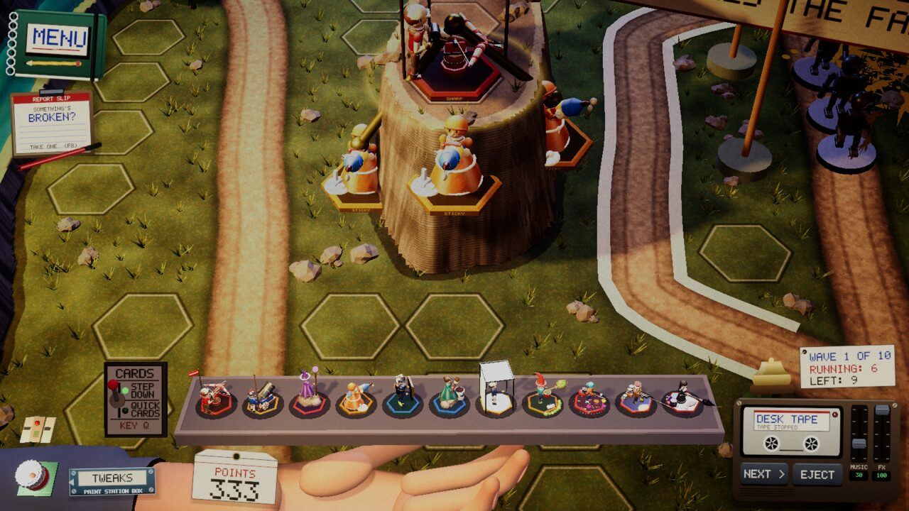
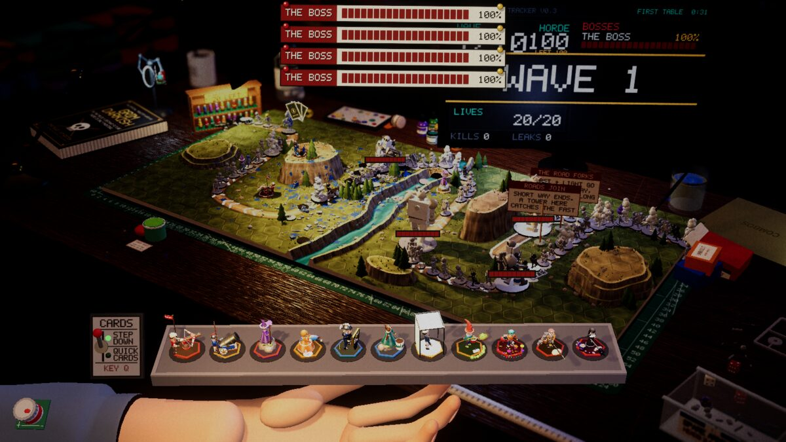

Devlog ·
Three glue towers hold nobody, and the biggest garbage was a command-line parse
Two measurement jobs on today's game: the glue tower turned out to be a multiplier rather than a trap, and the heaviest per-frame allocation was the game re-reading its own launch options for every camera.
Glue, measured on the game as it is now
Issue 201 was opened weeks ago, before the glue tower was rebuilt into a marker that makes a "glued" enemy take 1.3 times damage and before every table was retuned. The worker was asked to finish the last checks anyway: stack three glue towers on one stretch and see whether the wave still gets through, and report the good and late bots on the desk, kitchen and bed with the nearest approach to the exit for every wave. It added one log line per wave for that, and changed no balance value.
On the desk, with towers placed by hand on one stretch:
| build | lives left after wave 1 (of 20) | wave 1 kills | share of enemy-seconds stuck | |---|---|---|---| | nothing | 8 | 0 | 0.0 % | | three Superglue | 9 | 1 | 0.0 % | | one Ballista | 8 | 0 | 0.0 % | | Ballista beside three Superglue | 19 | 11 | 0.0 % |
Three glue towers hold nobody; the wave walks through as if they were not there. Put a Ballista beside them and it kills 31 over ten waves instead of 1, with the glue towers collecting 23. Across the good-bot runs, everything that holds enemies in place kept them stuck for 1.3 percent of enemy-seconds on the desk. Glue is now a multiplier for its neighbours, which is what the issue asked for.

The desk is lost early and never late
The good bot's lives left, three seeds each, counting what table one's lives floor hides: kitchen 5, 19, 20; bed -16, 20, 16; desk 0, 3, -14 (and 9, -2, -3 on three more seeds). A negative number means the table would have been lost without the floor. The target is 8 to 12 lives; with seeds 15 to 36 lives apart, three cannot resolve it.
The pattern worth reporting is the desk. Every desk loss happens in waves 1 to 4, and waves 5 to 10 never leak. Ten Ballistas bought whenever affordable lose in wave 2 on the desk, while the same build lasts to wave 6 or 10 on the other two tables. An earlier balance sweep had the desk good bot at 20, 13 and 5 lives, so something changed since. A shared dial would move all fifteen tables and growth only acts from wave 3, so the worker filed it separately (issue 804) with leads.
The first runs went wrong in four ways: a bar-joined command was not split, so four runs measured an empty table; a run's tower draft held the hand until a pick was made; table one never drops below one life, so every scripted table "won"; and the same desk seed gave 13 lives in one run and 0 in another, so every case got three seeds.
6.7 KB per frame, and where it came from
Issue 792: the 100-enemy stress run allocated about 6.6 KB of managed heap every frame with the overlay off. The call that reports allocated bytes returns 0 on this runtime, so the worker measured heap-size changes around each callback, each statement of the toy's update, and the render events.
The biggest source was not in the game loop. The screen-effect code parsed the entire command line to check for the -novig option, once per camera per frame: about 3.5 KB. The rest: pad axis names built by string joins (0.4 KB), a list lookup that boxes key codes (0.25 KB), a saved-preference read for every unseen guide note (0.15 KB), and a new tape list built every frame for the desk kit (0.1 KB). Each was cached or replaced.
Six runs after the change: 1,458 to 1,564 bytes per frame, against 6,631, 6,626 and 6,738 before. The check asked for under 1,500, so the worker called it not clearly met and left the pull request open; the lead merged it. About 1.1 KB left is inside the camera render in the rendering pipeline, and with rendering switched off the whole run is 225 bytes.

Smaller merges
- A real slap sound for the lent tower's hand slap (issue 302). Its exported clip decays from RMS 0.50 to 0.01 in 80 ms; the worker wrote that it cannot listen.
- The report slip takes its moniker from the chat-server activity (issue 760). The worker's first test hit the live relay and filed four real issues, closed as not planned.
- A tower can send an enemy down a plank gap (issue 507), and the Measure Twice rule works on any table with its range preview drawn as a ruler (issue 247).
What nobody has checked yet
- Whether glue feels like a strong control tower, and whether the kitchen and bed feel losable, by hand; the owner has not played them.
- Why the desk changed since the last sweep (issue 804).
- Windows and Web builds of the allocation fixes, and a gamepad with the cached axis names.
- The slap, by ear; the plank-gap squirrel and Conker in a live run; the ruler while dragging a tower.
- The chat-server moniker flow inside the real chat server.